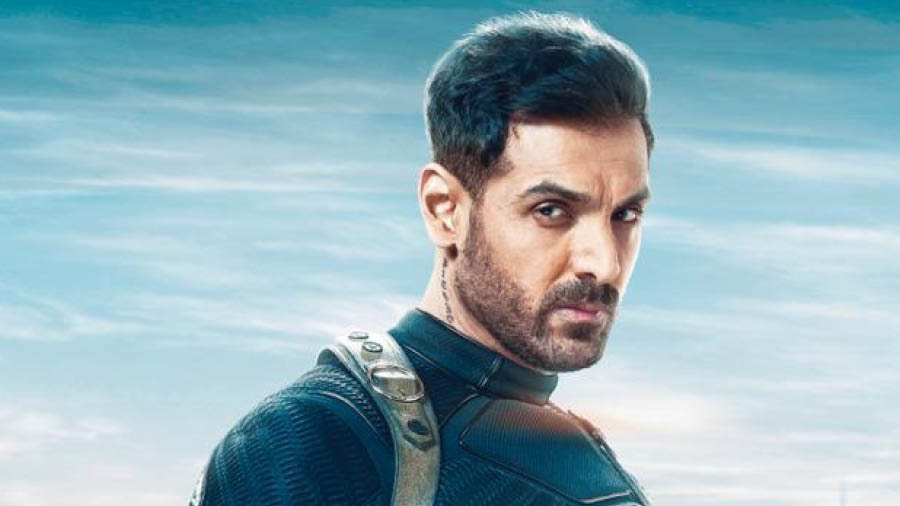

Major Kabir
Major Kabir Dhaliwal is a former RAW Agent who was once considered India's best agent, then turned rogue and
killed top but corrupt officials, scientists and officers in the Indian establishment, targeting and
executing them viciously across the world. He also led an Elite Shadow Unit of RAW, a compact group of the
crème de la crème of the armed forces who were personally trained by him and assisted him on various
high-risk missions across the world

Captain Khalid Rahmani
Captain Khalid Rahmani was a RAW agent who under Kabir's Elite Shadow Unit and assisted him on various
high-risk missions across the world before his capture and death. With his unwavering guts and dedication,
he proved that he was the best student, Kabir ever had.
Pathaan
Nothing much is known about Pathaan, and his parentage except he was found abandoned in a cinema hall. He was
then taken to an orphanage then to juvenile centre and then to remand home. The love and care he got,
motivated him to join the Indian Army and better serve the country he believed raise him.

Jim
Jim is a former RAW agent-turned-mercenary. Jim, once a truly patriotic and dedicated Indian soldier, got
killed at the hands of Somalian Pirates but later returned as Businessman-cum-Terrorist, leader of mercenary
group - Outfit X.
Tiger
Avinash Singh Rathore, codenamed Tiger is a former RAW agent who went under hiding since he fell in love with
Zoya Nazar, an ISI Agent and eloped together. Despite not being an official RAW Operative, Tiger plays a
major role in many of the operations of RAW.